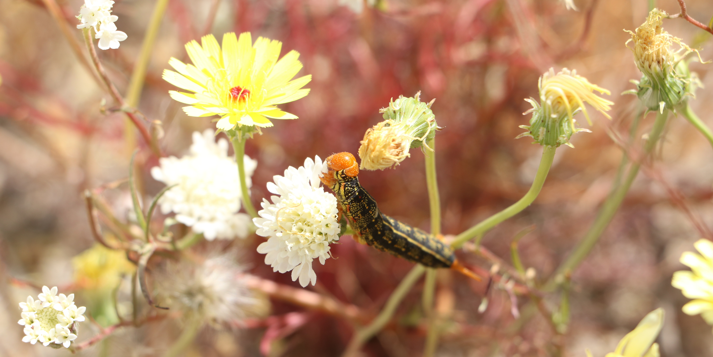

About Me
My education in Operations Research and Information Engineering (ORIE) has allowed me to grow a wide variety of analytical skills. I enjoy applying a quantitative mindset in order to find efficient solutions to large problems, and am especially passionate about projects with a strong ethos. I am proficient in Python and am especially strong in data analysis, machine learning, and data visualization. In addition to Python, I have been exposed to Java, Julia , and C. In addition to coding languages I have experience scripting in R, SQL, AMPL, and VBA. I am experienced in Github, Jupyter Notebooks, and the papermill package for parameterizing the execution of Jupyter notebooks.
Another academic interest of mine is using mathematics and machine learning to study fairness and equity. A variety of ORIE courses: Introduction to Game Theory, A Mathematical Examination of Fair Representation, and Learning with Big Messy Data; have enabled me to study concepts such as coalitional game theory and fairness metrics in machine learning relevant to this.
Outside of the academic setting I love spending time outdoors; being from San Diego, CA and studying in Ithaca, NY has enabled me to see some spectacular parts of nature. I enjoy photography, especially capturing beautiful landscapes or sights from unique angles. I have enjoyed rock climbing, backpacking, and snowboarding since high school and continue to be thrilled how these activities can lead to exploring new places. When I am inside, I am quite intrigued by DIY music, synthesizers, and music production technology.
Work Experience
System Engineer Intern - ServiceNow
Worked with the systems engineering team to help design tools to automate internal work tracking and planning. The tools designed generated reports and recommendations in order to ease the scrum master’s job throughout the Agile planning process.
Data Consultant - Fincher Educational Consulting LLC
Worked remotely by independently summarizing and visualizing data to aid in public and higher education consulting projects across the U.S. Developed spreadsheets to automate analyzing district test scores by demographic.
Projects
Machine Learning - Predicting Flight Delays Due to Weather
As part of my ORIE 4741: Learning with Big Messy Data course, two team members and I used a variety of supervised and unsupervised techniques in order to create a set of models that can predict the severity of a flight delay based on a weather forecast. We trained our model on flight data from the Bureau of Transport Statistics and weather data from the National Oceanic and Atmospheric Administration, which produced a large, but very messy data set. We used both Python and Julia to analyze the data, build our model, and produce a variety of graphs and vizulations both of the limitations of our data and the performance of our model. The full report, models, and data are available on github.
Product Management - Pocket PM (App for Junior Product Managers)
For ENMGT 5920: Product Management, four team members and I performed user research on junior product managers to understand their pain points when beginning their career in product management in order to design a digital app that aids in easing this transition. Used this research as well as a variety of product management principles and activities to develop a feature set, prototype, and business proposal for our application. Developed KPI dashboards, product roadmaps, goals and milestones for the hypothetical product. As a final presentation, the group gave a 10 minute presentation on how we arrived at our product and our plan to move it forward.
Technical Communications - Engineering Communication in the Workplace
Interviewed a Cornell Operations Research Alumni in order to understand communication practices in industry. Collaborated with a peer in order to synthesize what we learned into a report on how engineering alumni communicate and collaborate in the workplace as well as how engineering education may be able to better prepare students for workplace communication practices. We created a report based on our findings, as well as delivered a poster presentation with our dynamic poster featured below.
Contact Me

If you would like to learn more about me I am available via email, or the platforms below: